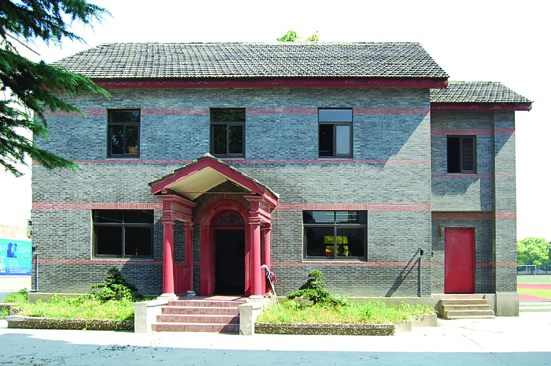
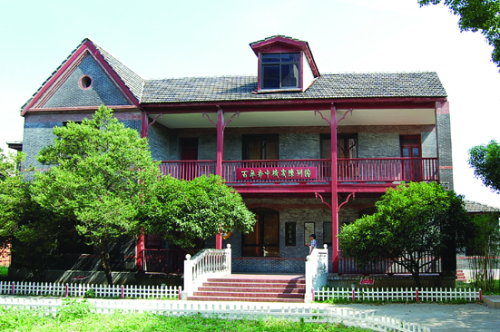

嘉兴市文物保护网 · 市级文物保护单位 · 2014-06-19 · 原文


秀州中学旧址位于南湖区建设街道丁家桥社区环城东路75号，建于清光绪二十六年（1900），为近代西式教育中学。现存建筑包含校史楼和行政楼，总占地面积约353平方米。校史楼系二层洋楼，砖木结构，坐北朝南，属典型的西式风格建筑，通面阔25.24米，通进深7.74米。墙体用青砖平砌而成，屋顶铺设洋瓦。1946～1949年作为外籍教师宿舍，解放后借予“地青委”作办公室使用，2000年修葺后作为校史陈列馆。行政楼系二层洋楼，坐北朝南，砖木结构，属典型的西式风格建筑，通面阔14.27米，通进深11米。墙面用青砖平砌而成，屋面铺设洋瓦。原为校长住房，1956年左右改为行政办公楼。秀州中学是嘉兴近代第一批西式教育学校，其建筑均为洋人设计建造，在嘉兴近代教育史上有重要地位，具有较高的历史和艺术价值。2000年公布为嘉兴市级文物保护单位。